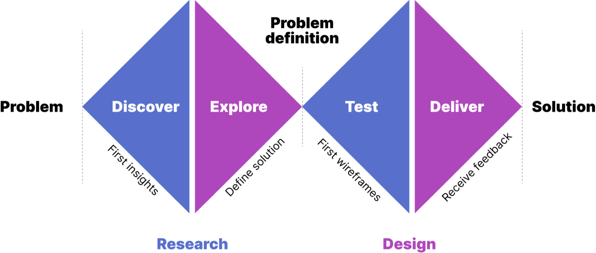
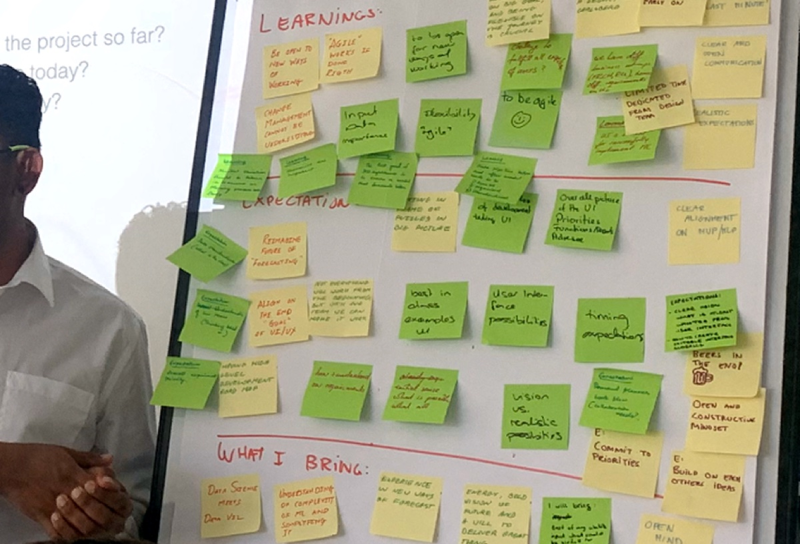
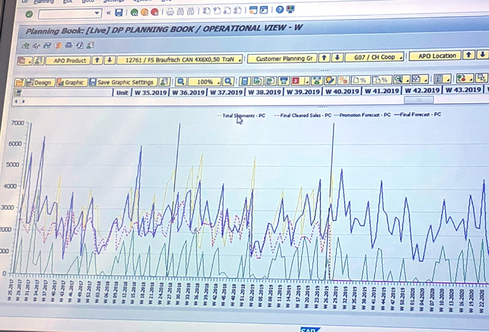
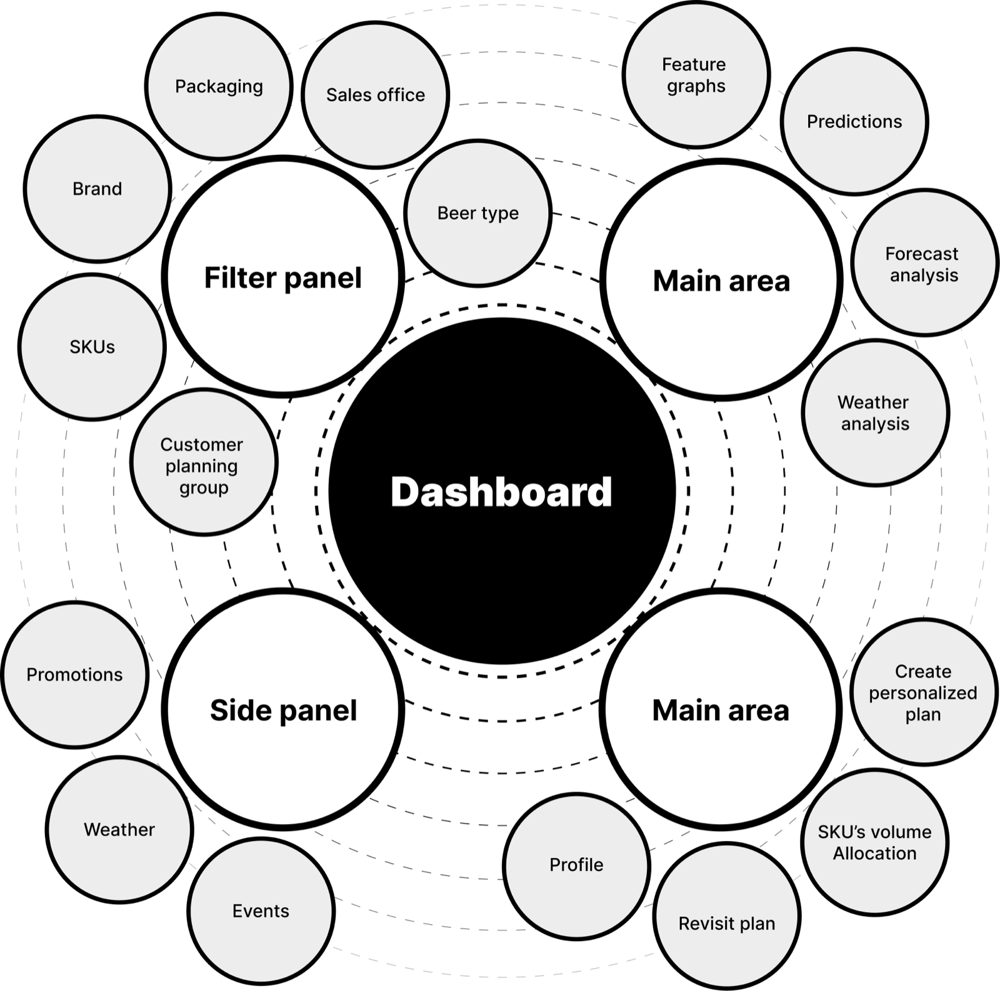
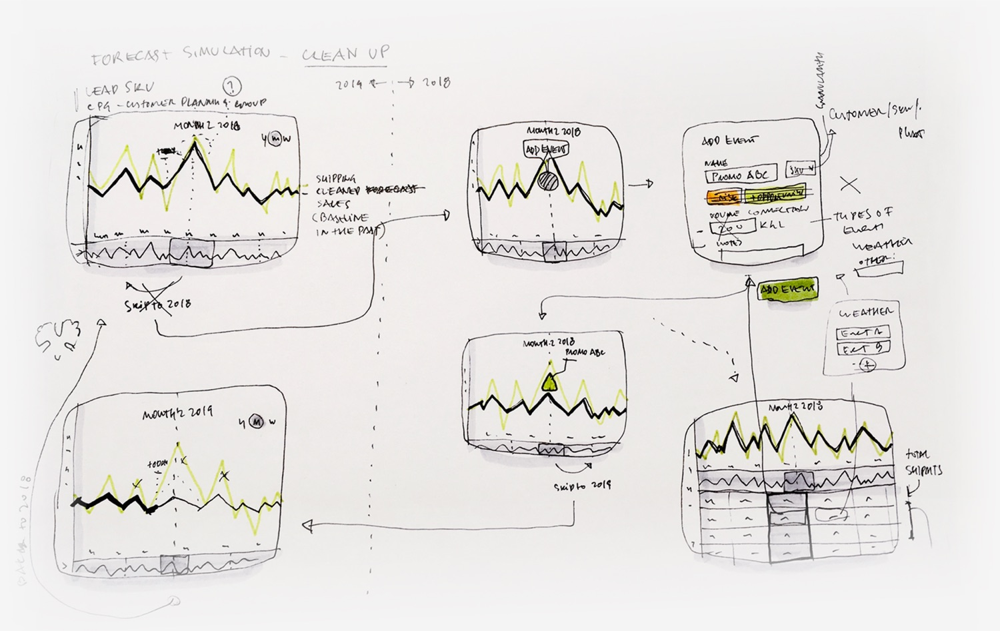
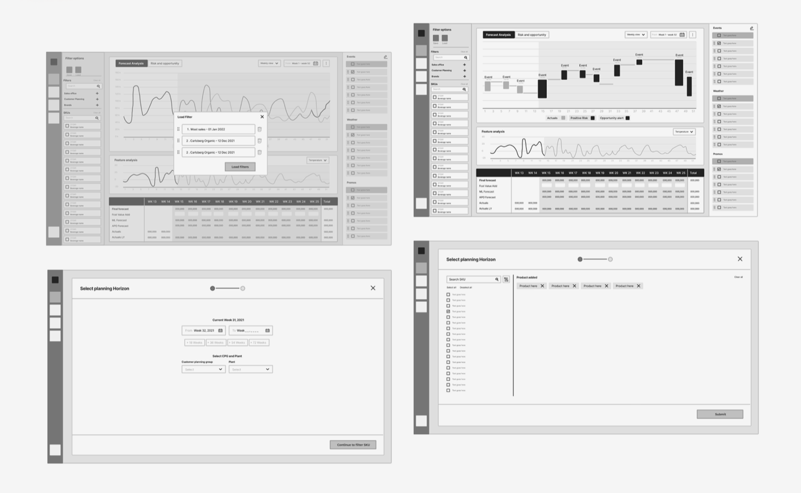
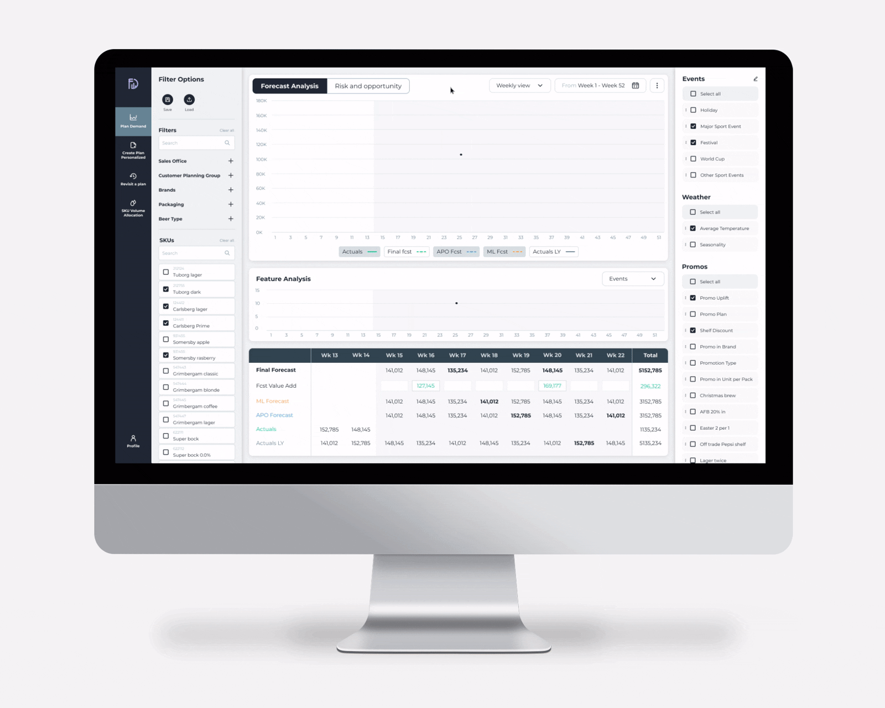

Forecast Demand
Bridging supply logistics with predictive insights
What is Forecast Demand?
Forecast Demand aligns global supply with local market intelligence. Keeping Carlsberg's inventory right is a high-stakes balancing act, so the tool pulls together weather, local events, and live campaigns to calculate exact beverage volumes per brewery. Complex data becomes clear decisions, product stays available, and waste drops in every market.
The challenge: cognitive clarity at scale
The core challenge was balancing dense data with clarity. The goal was to turn complex supply-chain variables into an intuitive tool that removes guesswork from stock management and supports fast, data-driven decisions across every market.
I built the interface around a strict visual hierarchy and plain keywords, so new team members can read dense data with confidence and little training. It surfaces the critical signals and suppresses the noise, letting planners spot risks and opportunities, like seasonal spikes or market shifts, in real time. The modular framework stays resilient across markets, giving every team one consistent source of truth.
Ideation phase
The process

Insights and interviews
"Because the data is too broad, I'm more afraid to risk on a hunch and fail than to try and achieve."
"Our current graphs are visually confusing, miss key points, and can be a pain to navigate."
"My main problem is the time I waste training new users. There's way too much information, and until they know the basics we lose money."


Personas
Louis Stuart
Background: 20+ years in the industry. He has a "mental map" of the business but is slowed down by declining eyesight and overly complex legacy software.
Motives:
- He doesn't want the tool to tell him what to do; he wants it to verify his expertise with clear, legible data.
- He needs high-contrast visuals and clear typography, because "visual noise" causes him physical fatigue.
- He is terrified of a "black box" algorithm. If he can't see why a number was generated, he won't use it.
"I don't need fancy; I need a tool that works as fast as my intuition without making me squint."
Maria Flint
Background: tech-savvy and ambitious. She understands the math but doesn't yet have the "years on the ground" to spot errors by feel.
Motives:
- She wants to become an expert overnight. She needs "guardrails" in the UI that prevent rookie mistakes.
- Unlike Louis, she'll take risks if the data shows a clear trend. She needs "drill-down" capabilities to see the raw numbers behind the graphs.
- She wants to manage multiple markets simultaneously, and needs a system that alerts her to problems so she doesn't have to hunt for them.
"I have the energy to take risks, but I need the data to be my safety net."
User stories
As a data analyst, I want to synthesize external market triggers (like weather and local events) into the core forecast, so that I can transform volatile variables into predictable stock requirements.
As a market admin, I want to visualize high-probability inventory gaps months in advance, so that I can balance capital expenditure with service-level commitments without overstocking.
How might we
How might we build a standardized architectural framework that stays flexible enough to ingest unique, localized data inputs across diverse global markets?
How might we design decision-support visualizations that build enough user trust to let analysts move away from conservative "safe" bets toward high-reward, data-backed risks?
Information architecture
To transform a fragmented supply-chain process into a unified digital ecosystem, I worked stakeholder requirements into a modular information architecture. Through collaborative workshops and dot-voting prioritization, I mapped a hierarchical structure that isolates high-frequency actions (the filter panel and main area) from contextual variables (the side panel). This keeps the interface resilient as new market-specific data streams are integrated, maintaining a consistent "single source of truth" across the global organization.
By nesting "Weather" and "Events" in a dedicated side panel, we provide the "why" behind the data without cluttering the main area, solving the visual overwhelm reported by senior analysts. The menu was restructured to prioritize SKU volume allocation and plan creation, reducing the click-path to move from insight to execution.

Sketches and wireframes
Before moving to pixels, I used rapid ideation to solve the most critical user pain point: distinguishing between organic trends and manual interventions. These sketches focus on the "Add Event" logic, letting analysts manually overlay promotional data or weather anomalies onto the baseline forecast. By visualizing the delta between "cleaned forecast" and "actuals," I designed a way for users to see exactly why a spike occurred, building the trust needed to move away from conservative hunches and toward data-backed risk-taking.


Final delivery
The final dashboard is a command center that turns many data streams into one clear narrative. With forecast analysis at the center, analysts can correlate historical "actuals" with future "predictions" at a glance. A three-column layout keeps global filters, the main visualizations, and external triggers like promotions and weather from competing for attention. It lets users dig into root cause, not just what the forecast is, but why it changed, turning raw data into a confident inventory strategy.
